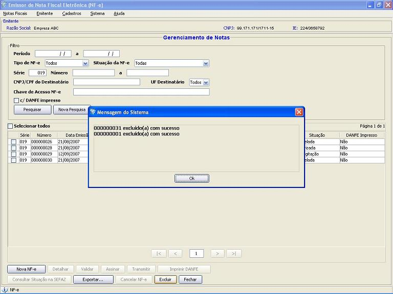

Software Emissor NF-e
Excluindo uma Nota
Fiscal
eletrônica (NF-e)
A opção
de exclusão de NF-e do Software Emissor NF-e.
Esta ação apaga a NF-e do software,
não sendo
possível a sua recuperação
posteriormente.
IMPORTANTE: A
EXCLUSÃO DE UMA
NF-e AUTORIZADA, CANCELADA OU DENEGADA NO SOFTWARE NÃO
REMOVE A
RESPECTIVA NF-e DA BASE DE DADOS DA SEFAZ.
IMPORTANTE: NÃO
É PERMITIDO A EXLUSÃO DE NF-e:
- COM A
SITUAÇÃO IGUAL A "EM PROCESSAMENTO NA SEFAZ"
- COM A
SITUAÇÃO IGUAL A "ASSINADA", TIPO
"CONTINGÊNCIA" E DANF-e IMPRESSO
Pré-condição:
-Um emitente
deverá estar previamente iniciado.
Existem duas formas para a realização da
validação:
1 ) Pela tela de
Inclusão/Edição da NF-e:
- Na tela de inclusão
ou edição de NF-e, acessar a
opção Excluir
- Caso a NF-e
satisfaça as
condições para a exlusão, a nota
será
removida do sistema, não podendo mais ser recuperada.
2 ) Pela tela de
Gerenciamento de NF-e's:
- Acessar o menu: Notas Fiscais -> Gerenciar
Notas
- Realizar a
pesquisa pela(s) nota(s) a ser(em) removida(s)
- Selecionar a(s)
nota(s) a ser(em) excluída(s) e clicar em Excluir
- Caso a(s) NF-e('s)
satisfaça(m) as condições para a
exlusão, a(s) nota(s) será(ão) removida(s) do
sistema, não podendo mais ser(em) recuperada(s).
